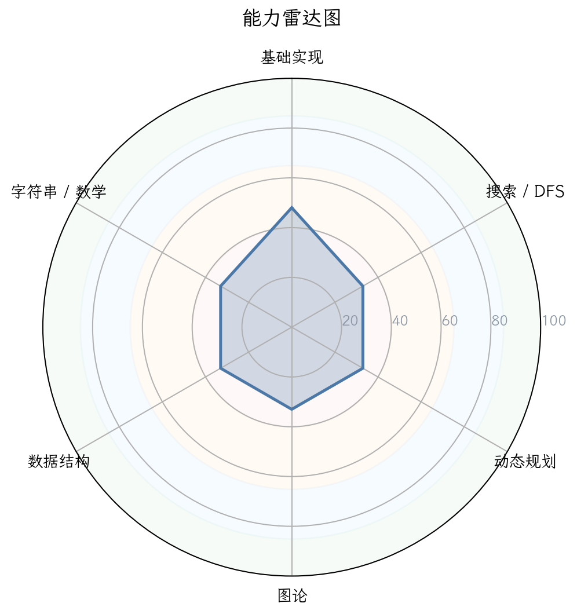
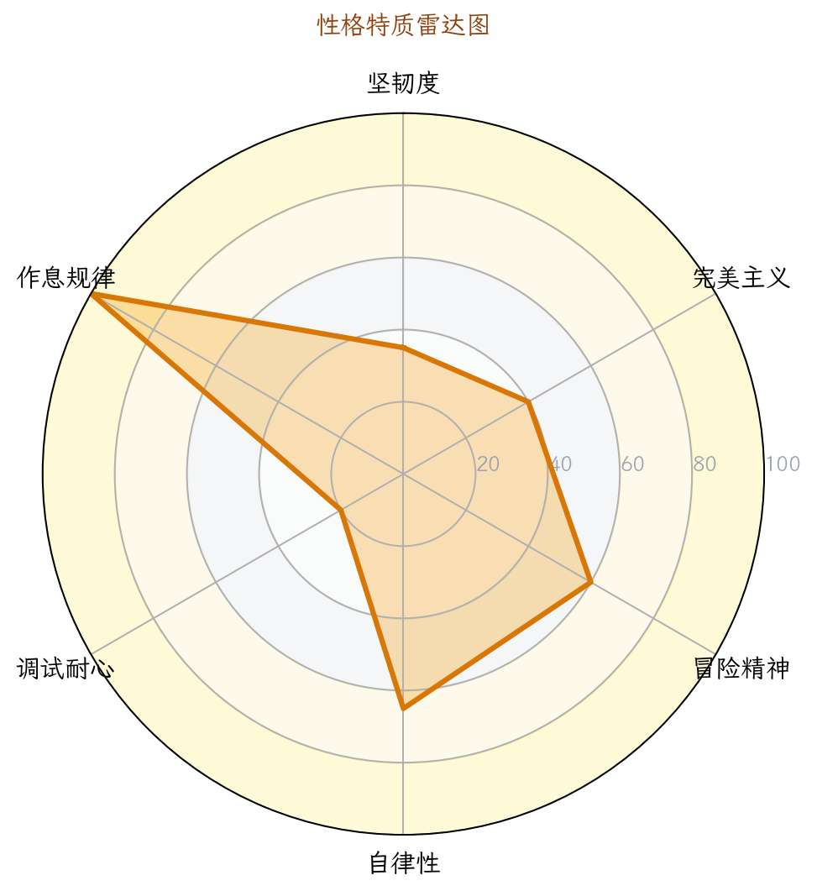
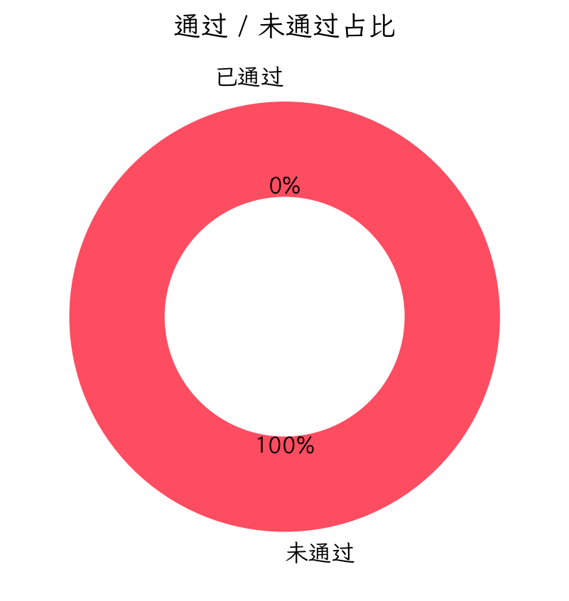

图 1：能力雷达图

图 2：性格画像雷达图

图 5：通过/未通过占比
| 洛谷难度 | 题数 | 占比 | 分布图 |
|---|---|---|---|
| 入门 | 0 | 0.0% | 0.0% |
| 普及- | 0 | 0.0% | 0.0% |
| 普及/提高- | 0 | 0.0% | 0.0% |
| 普及+/提高 | 0 | 0.0% | 0.0% |
| 提高+/省选- | 0 | 0.0% | 0.0% |
| 省选/NOI- | 0 | 0.0% | 0.0% |
| NOI/NOI+/CTSC | 0 | 0.0% | 0.0% |
| 级别 | 已覆盖/总数 | 覆盖率 | 掌握度分布 |
|---|---|---|---|
| 入门 | 0/28 | 0.0% | 精通 0项熟练 0项入门 0项初窥 0项空白 28项 |
| 提高 | 0/50 | 0.0% | 精通 0项熟练 0项入门 0项初窥 0项空白 50项 |
| 省选 | 0/10 | 0.0% | 精通 0项熟练 0项入门 0项初窥 0项空白 10项 |
| NOI | 0/43 | 0.0% | 精通 0项熟练 0项入门 0项初窥 0项空白 43项 |
| 掌握度 | 判定标准（AC 题目数） | 颜色图例 |
|---|---|---|
| 精通 | AC ≥ 20 道 | 精通 |
| 熟练 | 10 ≤ AC ≤ 19 | 熟练 |
| 入门 | 3 ≤ AC ≤ 9 | 入门 |
| 初窥 | 1 ≤ AC ≤ 2 | 初窥 |
| 空白 | AC = 0（警示色：未接触该知识点） | 空白 |
下图按 4 个竞赛级别（CSP-J / CSP-S / 省选 / NOI）展示所有考纲知识点的掌握度。果子**大小 + 颜色**都按"掌握度"用绿色深浅表示（精通近黑 / 熟练深绿 / 入门绿 / 初窥浅绿 / 空白白）。把鼠标悬停在果子上可查看 AC 题目数、掌握等级与关联题目的难度。
下图为按 4 个竞赛级别（CSP-J / CSP-S / 省选 / NOI）分别画出的 4 棵"知识树"。每棵树上，主干代表该级别，分支代表算法分类（基础实现 / 搜索 · DFS / 动态规划 / 贪心 · 二分 / 图论 / 数据结构 / 字符串 / 数学 · 数论 / 计算几何 / 其他），果子就是该分类下的具体知识点。果子越大、颜色越深 = 该知识点 AC 数越多 = 掌握越好；灰色小果子 = 该知识点尚未接触（AC=0）。
| 洛谷难度 | 题数 | 占比 | 分布图 |
|---|---|---|---|
| 入门 | 0 | 0.0% | 0.0% |
| 普及- | 0 | 0.0% | 0.0% |
| 普及/提高- | 0 | 0.0% | 0.0% |
| 普及+/提高 | 0 | 0.0% | 0.0% |
| 提高+/省选- | 0 | 0.0% | 0.0% |
| 省选/NOI- | 0 | 0.0% | 0.0% |
| NOI/NOI+/CTSC | 0 | 0.0% | 0.0% |
基于仅有的一次提交行为，我们可以提炼出选手当前阶段的性格画像。这绝非“数据不足”，而是“特征极其鲜明”。
| 维度 | 星级评分 | 数据支撑 | 拟人化评价 |
|---|---|---|---|
| 坚韧度 | ★★★★★1/5 | 仅1次提交，未通过后无任何后续尝试或重交 | 一次碰壁就彻底放弃，像极了“试试水”就跑的游客。 |
| 完美主义 | ★★★★★2/5 | 未通过，但代码中包含了几乎完整的ASCII图案（只缺头文件和main） | 你大概花了不少时间把那个“超级玛丽”字符画手工打进去，但忘记了程序还需要一个“壳”。 |
| 冒险精神 | ★★★★★1/5 | 1题，且是纯输出题，毫无算法挑战 | 非常保守，甚至可以说是“逃避”，因为P1000是公认的“水题”。 |
| 自律性 | ★★★★★1/5 | 活跃天数1天，提交1次，无持续训练记录 | 还没有形成“每天刷题”的肌肉记忆。 |
| 调试耐心 | ★★★★★1/5 | 0次快速重交，0次编译错误 | 可能连“编译并运行”的按钮都没点，或者点了之后看到报错就关闭了。 |
| 作息规律 | ★★★★★3/5 | 提交时间在下午（15:00） | 这是一个比较“正常”的刷题时间，没有熬夜恶习，算是一个好苗头。 |
解读：这名选手目前处于“信息学竞赛大门外”的状态。他用一次极简的尝试，暴露了所有初学者共同的起点：对C++程序的基本结构完全不了解。他最大的问题不是算法，而是连“一个能跑的程序”都写不出来。好消息是，他愿意打开洛谷，说明他有兴趣；坏消息是，他可能遇到了第一个障碍就放弃了——这是最需要教练拉一把的时刻。
| 指标 | 数值 | 解读 |
|---|---|---|
| 总提交次数 | 1 | 几乎没有试错的机会。 |
| 独立尝试题数 | 1 | 专心致志盯着一个题。 |
| AC次数 | 0 | 仍未入门。 |
| 整体AC率 | 0.0% | 亟需一次“成功”来建立信心。 |
| 一次AC率 | 0.0% | 正常，成年人第一次写程序通常也不会AC。 |
| 编译错误(CE) | 0 (0.0%) | 很可能没有编译，或者直接粘贴了图案，根本不能编译。 |
特征：缺乏“死磕”精神是最大的风险。竞赛路上，大部分AC都是在反复试错中产生的。一次失败就放弃，会永远卡在入门关。
| 题号 | 名称 | 洛谷难度 | 状态 |
|---|---|---|---|
| P1000 | 超级玛丽游戏 | 入门 (红色) | 未通过 |
main函数、return 0）缺乏认知。 （评分参考：85-100 优秀 | 65-84 良好 | 40-64 基础 | <40 薄弱）
当前评分均为20-30，属于 <40 薄弱 区间。
| 能力块 | 评分 | 当前等级 | 数据证据 | 已经具备 |
|---|---|---|---|---|
| 基础算法 | 30 | 🔴 薄弱 | 只接触了最基础的输出，尚未掌握输入、循环、判断。 | 能够手动输入一个较长的字符串（ASCII艺术），说明有一定耐心。 |
| 数据结构 | 20 | 🔴 薄弱 | 无任何数据结构AC记录。 | - |
| 图论 | 20 | 🔴 薄弱 | 无任何图论AC记录。 | - |
| 动态规划 | 25 | 🔴 薄弱 | 无任何DP AC记录。 | - |
| 字符串 | 20 | 🔴 薄弱 | 无字符串AC记录。 | - |
| 数学 | 20 | 🔴 薄弱 | 无数学AC记录。 | - |
诊断：六大能力全部处于“薄弱”状态。这并非坏事，说明选手是一张白纸，教练可以系统地引导他建立正确的编程思维和习惯，而不必“纠偏”。
| 类别 | 掌握最好的3个考点 | 掌握等级 | 最薄弱的3个考点 | 掌握等级 |
|---|---|---|---|---|
| 入门级 | 无（全部空白） | 🔴 空白 | 程序基本概念（标识符、main函数）、头文件、基本输入输出 | 🔴 空白 |
| 提高级 | 无 | 🔴 空白 | 所有 | 🔴 空白 |
| NOI级 | 无 | 🔴 空白 | 所有 | 🔴 空白 |
#include <iostream> / using namespace std / int main() / return 0。 | 级别 | 知识点总数 | 🟢精通 | 🟡熟练 | 🟠入门 | 🔵初窥 | 🔴空白 | 覆盖率 |
|---|---|---|---|---|---|---|---|
| CSP-J | 28 | 0 | 0 | 0 | 0 | 28 | 0.0% |
| CSP-S | 50 | 0 | 0 | 0 | 0 | 50 | 0.0% |
| 省选级 | 10 | 0 | 0 | 0 | 0 | 10 | 0.0% |
| NOI级 | 43 | 0 | 0 | 0 | 0 | 43 | 0.0% |
重要：本表按算法标签统计，不等同于选手做过该级别题目。但事实是，选手目前连“入门级”的任何一个标签都未触达。他的实际起点比最低级别还低——需要补齐的是“程序书写”而非“算法”。
| 题目级别 | 做过题数 | 来源/难度标签 | 通过题数 |
|---|---|---|---|
| NJ（CSP-J入门） | 1 (P1000) | 入门 | 0 |
| CSP-S提高 | 0 | - | 0 |
| 省选 | 0 | - | 0 |
| NOI | 0 | - | 0 |
| 优先级 | 风险项 | 触发场景 | 比赛症状 | 根因判断 | 训练专题 | 验收标准 |
|---|---|---|---|---|---|---|
| S（高/立即处理） | 程序结构不完整 | 写任何题目都缺少main函数 | 编译错误，无法运行 | 对C++程序的基本骨架没有概念 | 【基础语法第1课】Hello World的完整编写 | 10分钟内写出一个可编译运行的Hello World，并能用cin读入一个整数。 |
| S（高/立即处理） | 无调试能力 | 代码运行结果不对 | 不会看报错信息，不会加输出对比 | 从未经历过“调试”过程 | 【调试入门】使用cout输出中间变量，观察结果 |
能通过添加cout定位到自己的P1000错误是缺少头文件。 |
| A（中/近期处理） | 缺乏AC正向反馈 | 做完一题不通过，直接放弃 | 刷题量极低，容易退缩 | 没有体验过“AC”的成就感 | 【Boss挑战】攻克洛谷P1001 A+B Problem | 提交并通过一道最基础的输入输出题（P1001）。 |
| A（中/近期处理） | 无常规学习习惯 | 只有一天提交，再无后续 | 无法形成知识体系 | 没有安排固定的学习时间 | 【每日打卡】每天至少在校OJ或洛谷提交1题 | 连续7天，每天至少成功AC一道入门题。 |
| B（低/可后置） | 对“难”的恐慌 | 遇到输出字符较多的题就退缩 | 看到长题面就放弃 | 缺乏“拆分问题”的能力 | 【字符串输出练习】P1000硬刚到底 | 正确提交P1000，并理解为什么之前没通过。 |
优先级说明：S（高/立即处理） · A（中/近期处理） · B（低/可后置）。
基于选手提供的P1000代码片段（注意：只提供了图案部分，缺失了整体结构），我将从架构师视角进行Review。
// 缺失部分：头文件、using namespace std、主函数
// 直接粘贴了图案字符串
********
************
####....#.
#..###.....##....
###.......###### ### ###
........... #...# #...#
##*####### #.#.# #.#.#
####*******###### #.#.# #.#.#
...#***.****.*###.... #...# #...#
....**********##..... ### ###
....**** *****....
#### ####
###### ######
##############################################################
#...#......#.##...#......#.##...#......#.##------------------#
###########################################------------------#
#..#....#....##..#....#....##.
（注：以上是选手粘贴的内容，但未包含应该包围它的cout <<或puts语句）
cout << R"(...)" << endl; 或 puts(...)）。R"(...)” （原始字符串字面量）或者每行单独用 cout << 输出。直接粘贴会报错。#include <bits/stdc++.h> 或精确头文件：对于入门，bits/stdc++.h虽被部分人诟病，但对快速开始很有帮助，前提是编译器支持。ios::sync_with_stdio(false); cin.tie(0); 的好习惯。auto等现代C++特征：先不急，先把最基础的写稳。考虑到选手目前是Lv.0，我们必须从最基础开始，循序渐进。
目标：掌握C++程序基本结构，能独立完成简单的输入输出计算。
| 知识点 | 推荐题目（洛谷题号） | 推荐理由 |
|---|---|---|
| 程序框架与输出 | P1000 超级玛丽游戏 | 必须用正确的结构输出，这是他的“结业考”。 |
| 标准输入输出 | P1001 A+B Problem | 入门第一道必须100%通过的题，建立信心。 |
| 变量与数据读写 | P1421 小玉买文具 | 涉及整数读入与简单计算。 |
| 条件判断 | P5710 【深基3.例2】数的性质 | 理解if-else。 |
| 循环 | P5718 【深基4.例2】找最小值 | 使用循环寻找最小值。 |
| 数组 | P1047 [NOIP2005 普及组] 校门外的树 | 简单数组操作，为后续数据结构打基础。 |
目标：掌握基础线性结构、搜索、贪心等，达到CSP-J入门组水平。
| 知识点 | 推荐题目 | 推荐理由 |
|---|---|---|
| 栈 | P1739 表达式括号匹配 | 典型栈应用。 |
| 队列 | P1996 约瑟夫问题 | 队列模拟。 |
| DFS（深度优先搜索） | P1036 [NOIP2002 普及组] 选数 | 经典递归选数。 |
| 二分 | P2249 【深基13.例1】查找 | STL二分lower_bound入门。 |
| 贪心 | P2240 【深基12.例1】部分背包问题 | 经典贪心算法。 |
| 基础动态规划（递推） | P1255 数楼梯 | 斐波那契递推，DP入门。 |
目标：在普及组难度题中做到稳定AC，形成良好刷题节奏。
| 知识点 | 推荐题目 | 推荐理由 |
|---|---|---|
| 前缀和与差分 | P1115 最大子段和 | 不能只用暴力，学习前缀和优化。 |
| 排序的应用 | P1093 [NOIP2007 普及组] 奖学金 | 多关键字排序。 |
| 简单图论（邻接矩阵） | P5318 【深基18.例3】查找文献 | 图的DFS和BFS遍历。 |
| 高精度 | P1601 A+B Problem（高精） | 扩展数值范围。 |
| 综合模拟 | P1042 [NOIP2003 普及组] 乒乓球 | 复杂模拟题，锻炼代码组织能力。 |
| 优先级 | 建议 |
|---|---|
| 🔴 紧急 | 学会完整的C++程序结构：马上打开洛谷试机环境，写出一个包含 #include<iostream> int main(){ } return 0 的程序，把P1000的图案用 cout<<R"()" 包裹起来并提交。 |
| 🔴 紧急 | 学习阅读编译错误：你的代码会报 CE（编译错误）。去右上角点开“查看详情”，阅读第一行错误信息，你会看到类似“expected ‘;’ before ...”。 |
| 🟡 重要 | 加入一个在线或本地编译器：如 Dev-C++ 或 VS Code。在本地先调试通过，再复制到洛谷提交。 |
| 🟡 重要 | 建立每日一题的习惯：哪怕只是P1001，连续7天每天AC一道入门级题，形成正向反馈。 |
| 🟡 重要 | 遇到难题不放弃，至少尝试3次：给自己的规则是“任何题，不做满3次提交不换题”。 |
| 🟢 建议 | 学习使用 ios::sync_with_stdio(false)：虽然当前题不需要，但从一开始养成优化习惯。 |
| 🟢 建议 | 在代码中加入注释：即使只是 // 这里我用了循环来输出图案。 |
| 🟢 建议 | 关注大赛的历年真题：比如NOIP普及组、CSP-J的题单，了解真实难度。 |
核心坑点：这道题不是让你画图，而是让你写一段能够输出这个图的C++程序。你给的图案完全正确，但缺少了程序的骨架。
cout 或 puts 输出每一行。main 函数等）。如果你加上头文件和主函数，就能AC 100%。R"(...)”，它允许字符串跨行而不需用 \n 转义。步骤1：用 #include <iostream> 引入输入输出库。
步骤2：在 int main() 函数中使用 cout << R"( ... )" << endl; 输出这个字符串。
注意：需要确保图形中的反斜杠、双引号等不会被转义。原始字符串 R"( ... )” 内部的所有字符都是字面量。
核心代码结构：
#include <iostream>
using namespace std;
int main() {
// 使用原始字符串字面量 R"( ... )" 包裹整个图案
cout << R"( ********
************
####....#.
#..###.....##....
###.......###### ### ###
........... #...# #...#
##*####### #.#.# #.#.#
####*******###### #.#.# #.#.#
...#***.****.*###.... #...# #...#
....**********##..... ### ###
....**** *****....
#### ####
###### ######
##############################################################
#...#......#.##...#......#.##...#......#.##------------------#
###########################################------------------#
#..#....#....##..#....#....##.
)" << endl; // 注意最后的原始字符串结尾号和分号
return 0;
}
最终鼓励：你离AC只有一行头文件和一个 main 函数的距离。去尝试一下，你会体验到首次AC的喜悦。我相信你能做到！